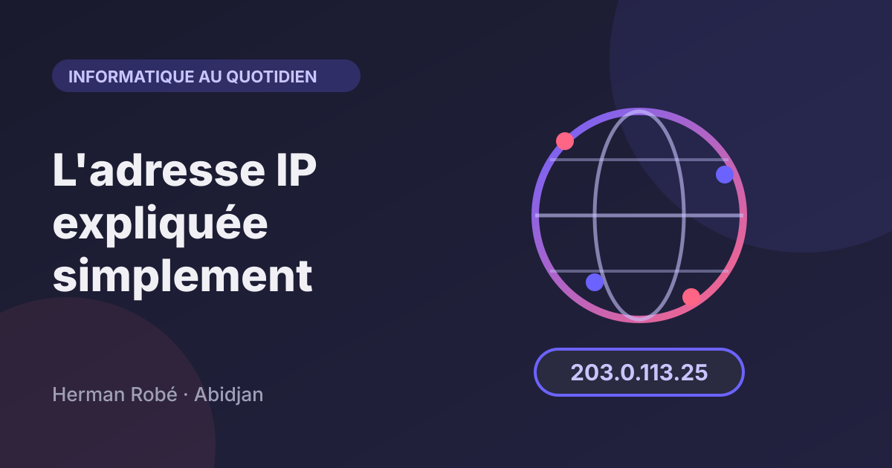
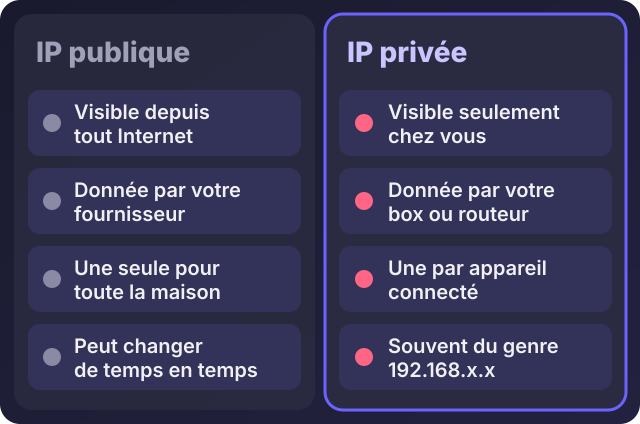
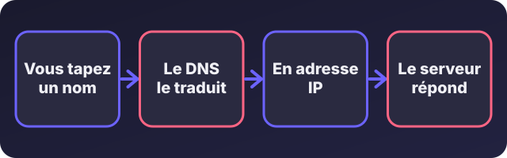
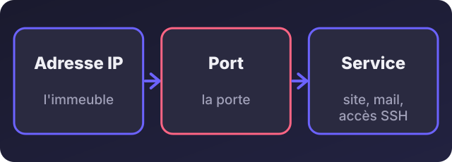

Accueil / Blog / Informatique au quotidien
Informatique au quotidienL'adresse IP expliquée simplement (pour les nuls)

Écouter cet article · environ 5 min
« Donnez-moi l'adresse IP du serveur. » « Le site n'est pas accessible, ça vient peut-être de l'IP. » Ce sont des phrases qu'on entend dès qu'on parle d'hébergement, de Wi-Fi ou de sécurité. Pour beaucoup de gens, c'est du jargon. En réalité, c'est une idée très simple. La voici.
L'image à retenir : le numéro de téléphone
Pour appeler quelqu'un, il faut son numéro. Pour qu'un ordinateur parle à un autre sur Internet, il lui faut aussi un numéro : l'adresse IP. Chaque appareil connecté (téléphone, ordinateur, serveur, imprimante en réseau) en a une. Quand vous ouvrez un site, votre appareil envoie sa demande à l'adresse IP du serveur, et le serveur renvoie la réponse à la vôtre.
À quoi ça ressemble
Il existe deux formats :
- IPv4, le plus ancien : quatre nombres de 0 à 255 séparés par des points, par exemple
203.0.113.25. - IPv6, plus récent : de longues suites de chiffres et de lettres séparées par des deux-points, par exemple
2001:db8::1. Il a été créé parce que les adresses IPv4 commençaient à manquer.
Les exemples ci-dessus sont des adresses réservées à la documentation : elles n'appartiennent à personne.
Publique ou privée

- L'adresse publique est celle que le reste d'Internet voit. Votre fournisseur d'accès vous en donne une, souvent une seule pour toute la maison ou le bureau.
- Les adresses privées sont celles que votre box ou votre routeur distribue aux appareils du réseau local. Elles commencent généralement par
192.168,10.ou172.16à172.31. Elles n'ont de sens que chez vous. - L'adresse
127.0.0.1est spéciale : c'est votre propre machine. C'est l'adresse qu'on utilise pour tester un site en local.
Votre routeur fait le lien entre les deux : tous vos appareils sortent sur Internet avec la même adresse publique.
Fixe ou changeante
Une adresse dynamique change de temps en temps : c'est le cas de la plupart des abonnements. Une adresse fixe reste la même, ce qui est indispensable pour un serveur. Quand vous achetez un VPS, l'hébergeur vous donne une adresse fixe.
Précision utile : sur beaucoup de réseaux, notamment mobiles, plusieurs clients partagent la même adresse publique (on parle de CGNAT). Conséquence : il est souvent impossible d'héberger un serveur chez soi sur ce type de connexion. Pour héberger un site, on passe par un hébergeur.
Le lien avec les noms de domaine
Personne ne retient 203.0.113.25. On retient ea-services.net. C'est le rôle du DNS, l'annuaire d'Internet : il traduit un nom en adresse IP.

Quand vous mettez un site en ligne, vous créez chez votre gestionnaire de nom de domaine un enregistrement qui dit : « ce nom correspond à cette adresse IP ». Il s'appelle un enregistrement A pour une adresse IPv4 et AAAA pour IPv6. Après la modification, il faut parfois attendre un peu, de quelques minutes à quelques heures, que l'information se propage.
Les ports : la porte, pas seulement l'immeuble
Une adresse IP désigne la machine. Mais une même machine peut offrir plusieurs services : un site web, un accès à distance, une messagerie. Chacun écoute sur un port, un numéro, comme une porte différente d'un même immeuble.

Trois à connaître : le port 80 (site web sans cadenas), le port 443 (site web avec cadenas, HTTPS) et le port 22 (accès à distance sécurisé, SSH).
Comment trouver une adresse IP
# Windows : l'adresse privée de votre ordinateur
ipconfig
# Linux : même chose
ip a
# Tester si une machine répond
ping 8.8.8.8
# Voir à quelle adresse correspond un nom de domaine
nslookup ea-services.netPour votre adresse publique, ouvrez un site qui l'affiche, comme ipinfo.io : il vous répond avec l'adresse que voit Internet, et l'opérateur qui vous la fournit.
L'adresse IP et la sécurité
- Elle révèle peu, mais pas rien : votre fournisseur d'accès et une localisation approximative, au niveau de la ville ou de la région. Pas votre adresse de domicile.
- Un VPN remplace votre adresse par celle de son serveur, ce qui cache votre localisation aux sites visités.
- Un serveur exposé à Internet reçoit des tentatives de connexion en permanence, venues de robots qui testent des adresses au hasard. C'est normal. D'où l'importance des mises à jour, des mots de passe solides et d'un pare-feu qui n'ouvre que les ports nécessaires.
- Ne partagez pas les adresses internes de votre entreprise (celles en
192.168...) dans des messages publics : elles aident à comprendre votre réseau.
À quoi ça sert en pratique
Quand un site ne s'affiche pas, vous pouvez chercher la panne en deux étapes :
- Le serveur répond-il ? Faites un
pingsur son adresse IP. S'il ne répond pas, le problème est du côté de l'hébergeur ou du serveur. - Le nom de domaine pointe-t-il vers la bonne adresse ? Faites un
nslookupsur le nom. Si l'adresse affichée n'est pas celle du serveur, c'est l'enregistrement DNS qu'il faut corriger.
Un problème de nom de domaine, de DNS ou de serveur inaccessible ? Écrivez-moi sur WhatsApp avec le nom du site : je regarde où ça bloque.